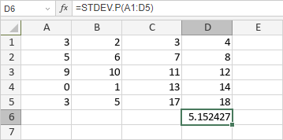

STDEV.P funkcija
STDEV.P funkcija je jedna od statističkih funkcija. Koristi se za izračunavanje standardne devijacije bazirane na celoj populaciji prosleđenoj kao argumenti (ignoriše logičke vrednosti i tekst).
Sintaksa
STDEV.P(number1, [number2], ...)
STDEV.P funkcija ima sledeće argumente:
| Argument | Opis |
|---|---|
| number1/2/n | Do 255 numeričkih vrednosti za koje želite da izračunate standardnu devijaciju. |
Napomene
Ako referencijalni argument sadrži tekst, logičke vrednosti ili prazne ćelije, funkcija će ih ignorisati, ali će tretirati ćelije sa vrednošću nula.
Kako primeniti STDEV.P funkciju.
Primeri
Slika ispod prikazuje rezultat koji vraća STDEV.P funkcija.
